Şefin özel
Bu bölümdeki makarnalarda gluten ve süt var.
| Makarna | Normal 240 g | Mega 360 g |
|---|---|---|
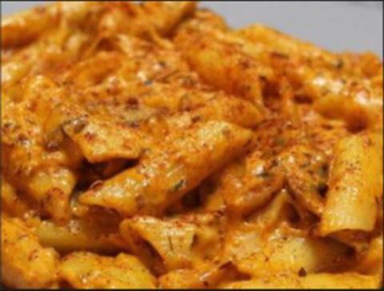 Önerimiz Fajita KaşarlımPenne, tavuk 80 g, mantar 50 g, kaşar, krema, fajita baharatı. | 340 ₺ | 400 ₺ |
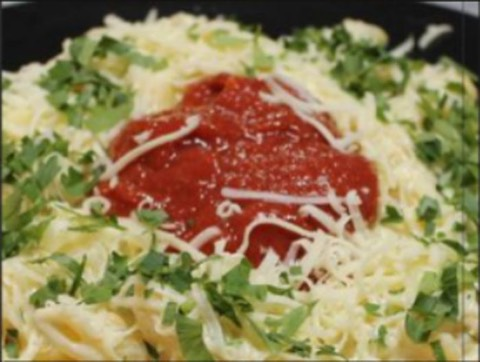 İstanbul SpecialPenne, patlıcan kreması, maydanoz, özel domates sos, kaşar. | 330 ₺ | 390 ₺ |
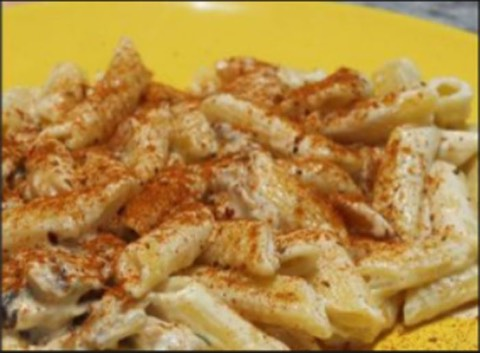 Kremalı mantarlı tavukluPenne, tavuk 80 g, mantar 40 g, krema, özel baharat karışımı. | 320 ₺ | 380 ₺ |
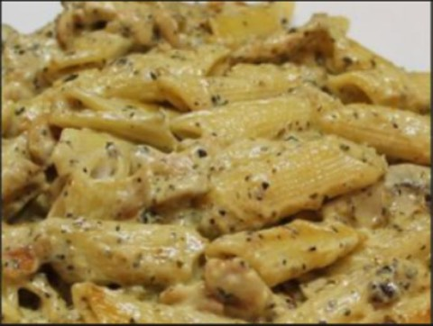 Pesto soslu mantarlı tavukluPenne, tavuk 80 g, mantar 40 g, krema, fesleğen, özel baharat karışımı. | 330 ₺ | 390 ₺ |
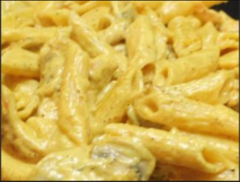 Köri soslu mantarlı tavukluPenne, tavuk 80 g, mantar 40 g, krema, köri, özel baharat karışımı. | 330 ₺ | 390 ₺ |
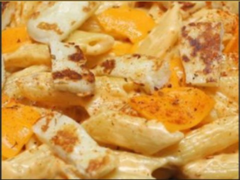 Hellim cheddarlıPenne, hellim, cheddar, cheddar sosu, krema. | 340 ₺ | 400 ₺ |
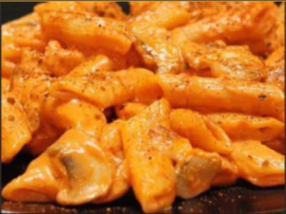 Özel SpecialPenne, tavuk 80 g, mantar 50 g, krema, özel domates sos. | 330 ₺ | 390 ₺ |
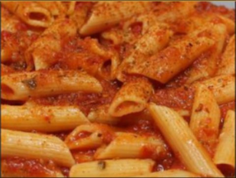 Acı Tavuklu bol acılıPenne, tavuk 80 g, bol acılı sos, krema. | 320 ₺ | 380 ₺ |
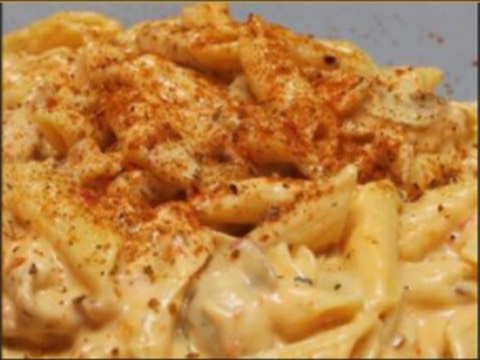 Sweet chili soslu mantarlı tavukluPenne, tavuk 80 g, chili sos, krema. | 330 ₺ | 390 ₺ |
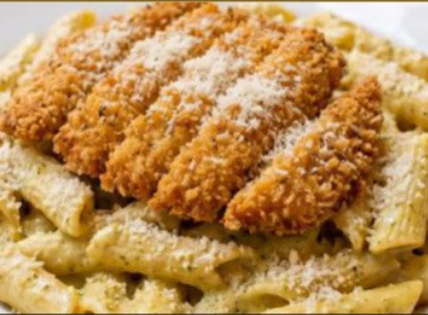 Çıtır tavukluPenne, çıtır tavuk 50 g, mantar, krema. | 330 ₺ | 390 ₺ |
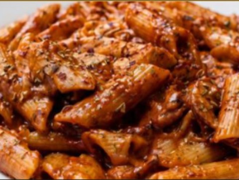 BBQ soslu mantarlı tavukluPenne, tavuk 50 g, mantar, krema, BBQ sos. | 330 ₺ | 390 ₺ |
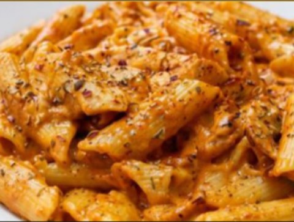 BahatrossPenne, tavuk 80 g, krema, özel karışım baharat. | 320 ₺ | 380 ₺ |
Klasikler
Penne, krema ve seçtiğiniz sos. Hepsinde gluten ve süt var.
| Makarna | Normal 240 g | Mega 360 g |
|---|---|---|
Kremalı | 240 ₺ | 300 ₺ |
Bol acılı | 240 ₺ | 300 ₺ |
Pesto soslu | 250 ₺ | 310 ₺ |
Köri soslu | 250 ₺ | 310 ₺ |
Sweet chili soslu | 250 ₺ | 310 ₺ |
Domates soslu | 250 ₺ | 310 ₺ |
Tavuklar
Makarna, salata ve ekmekle. Fiyat 1 porsiyon.
| Tavuk | Fiyat |
|---|---|
Tavuk soteTavuk, soğan, yeşil ve kapya biber, sarımsak, domates. Alerjenler: gluten | 300 ₺ |
Kremalı tavukTavuk, yeşil ve kırmızı biber, kekik, krema. Alerjenler: gluten, süt | 310 ₺ |
Kaşarlı tavuk soteTavuk, yeşil ve kapya biber, soğan, sarımsak, kaşar. Alerjenler: gluten, süt | 320 ₺ |
Acı soslu tavukTavuk, kapya ve çarliston biber, soğan, domates sos, acı sos. Alerjenler: gluten | 310 ₺ |
Mantarlı tavuk soteTavuk, mantar, soğan, yeşil ve kapya biber, sarımsak. Alerjenler: gluten | 310 ₺ |
Köri soslu tavukTavuk, krema, köri sosu. Alerjenler: gluten, süt | 310 ₺ |
Soya soslu tavukTavuk, soya sosu, kapya ve çarliston biber, soğan. Alerjenler: gluten, soya | 310 ₺ |
BBQ soslu tavukTavuk, çarliston ve kapya biber, krema, BBQ sos. Alerjenler: gluten, süt | 310 ₺ |
Sweet chili soslu tavukTavuk, çarliston ve kapya biber, krema, sweet chili sos. Alerjenler: gluten, süt | 310 ₺ |
İçecekler
| İçecek | Fiyat |
|---|---|
Ayran 300 mlAlerjenler: süt | 40 ₺ |
Şalgam suyu 300 ml | 45 ₺ |
Turşu suyu 300 ml | 45 ₺ |
Zafer Gazoz 250 ml | 45 ₺ |
Coca-Cola 330 ml | 70 ₺ |
Fanta 330 ml | 70 ₺ |
Sprite 330 ml | 70 ₺ |
Cappy 330 ml | 60 ₺ |
Fuse Tea 330 ml | 70 ₺ |
Su 500 ml | 20 ₺ |